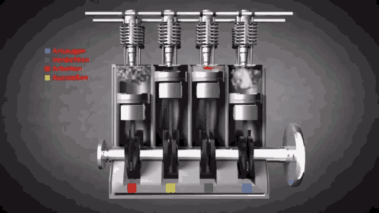
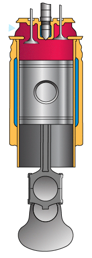
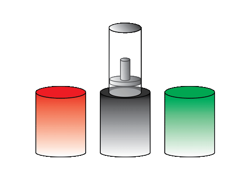

Idealizing the real world systems
The current idea of the engine is complicated and contains multiple pistons that expand and contract on combustion of fuel to do work.
- In order to reduce the complexity, We reduce the number of pistons to One.
- Combustion of fuel, is an irreversible process, And for Maximum efficiency, we should only involve reversible proecesses.
- Instead of combustion as a mode for expanding and contracting the gas, we move the pistons on heat baths.
Let us now look at the assumptions and reasonings we take.


